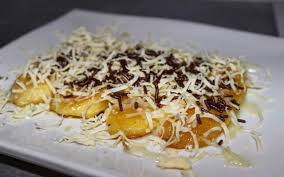
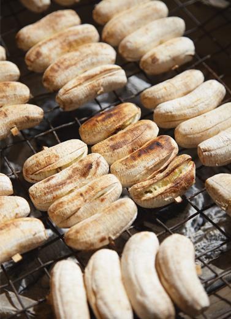
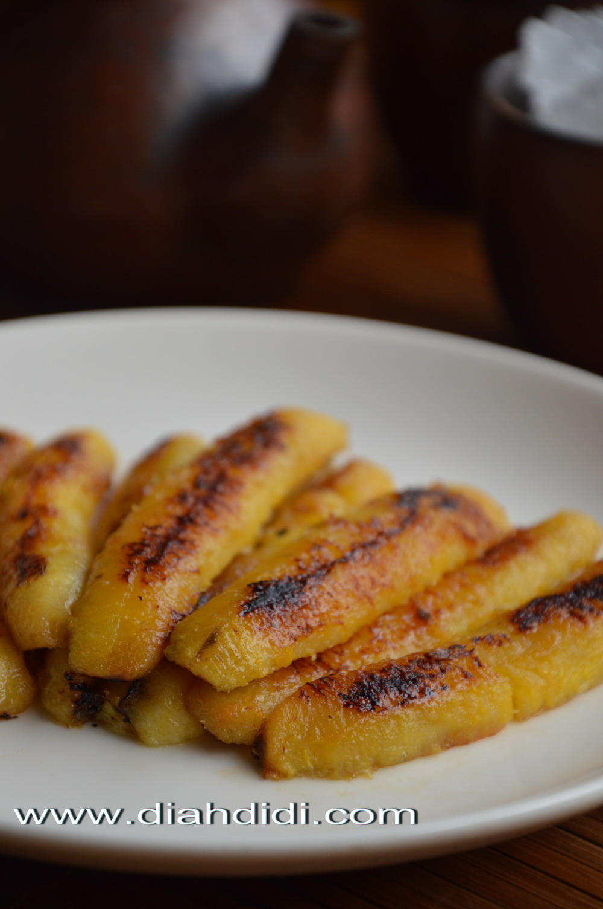

Resep Pisang Coklat

Bahan-Bahan:
- Pisang
- Susu Kental Manis Coklat
- Keju Parut
Langkah-Langkah
- Bakar Pisang Diatas Tempat Panggang, tunggu sekitar 5 menit

- Setelah lima menit, angkat dan taruh di piring

- setelah itu, berikan topping keju dan susu kental manis